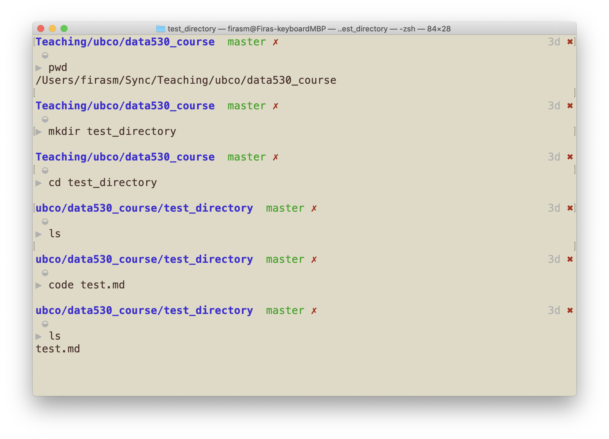

Today we will be learning about the Terminal! If you have not yet set up your local software stack, look in PrairieLearn for Class Activity 1B. Each of the questions there allow you to open a workspace in which you can play around with a cloud-based terminal.


Introduction to the
If you would like some additional notes and a much deeper explanation of the command line (also known as the Terminal), I suggest the notes from Software Carpentry! They are excellent.
In particular, I suggest “Introducing the shell”, “Navigating Files and Directories”, and “Working with Files and Directories”
What is the Command Line?
The command line is the text interface to the computer that accepts commands that the computer will execute. These commands include:
- starting programs
- navigating directories and manipulating files
- searching, sorting, and editing text files
- system and environment configuration
Why learn command line?
The command line is the text interface to the computer. Understanding the command line allows you to interact with the computer in ways that you often cannot with the graphical user interface (GUI).
The command line is commonly used for scripting and automation of tasks and when accessing remote systems. It will also be useful to run programs that make use of the command line (eg. github).
Why use command line?
The command line is part of the operating system (OS), which is software that manages your computer including all devices and programs.
- Common operating systems include Windows, Mac OS, and Linux/Unix.
- Some commands will be OS specific
You might be wondering why we would ever prefer command line over using the graphical user interface (GUI). - Certain tools may only be available to command line. - Sometimes command line is faster.
Command Line on Windows
The command line on Windows dates back to the original Microsoft operating system called DOS (Disk Operating System) in 1981.
This command line interface is still part of all modern Windows operating systems and is accessible as the “Command Prompt”.
I am requiring you use GitBash instead of the default Windows Command Prompt.
Windows Terminal
This is what the GitBash “Terminal” looks like. From here on out, whenever we say “Terminal”, we mean “GitBash on Windows”, “Terminal on macOS and Ubuntu”
- The directory separator is a forward slash
/for Macs/Ubuntu, and the opposite pointing slash on Windows\ - However if you use GitBash, this should preserve your sanity and you should be able to use forward slash on Windows as well
- In fact, many of the macOS/Ubuntu commands will also work in GitBash, but for completeness we will also share the other commands
Image source: Git for windows
Mac OS Command Line
The command line for Mac OS uses the same commands as Linux. It can be opened using Finder then Utilities then Terminal.
Alternatively, we could type Command-SpaceCommand-Space, then type “Terminal” and press EnterEnter.
Entering Commands
Enter a command at a prompt. The prompt may be a > or a $ or customized by the user.
Press EnterEnter to execute the command.
Commands are case-insensitive on both Mac/Linux and Windows. 
Here are some useful Terminal Commands
Special Commands
These are commands that will require some extra configuration to use. In this workspace, we’ve set them up for you already, but just be warned, these will not be available by default on all machines.
tree: print out a directory tree view of files and folderscode: edit the file in the VS Code editor
Learning Intentions: Terminal
By the end of class, and after deliberate practice you should be able to:
- Define command line and list some of its uses
- Explain the purpose of an operating system
- Know how to open the command line window on macOS and Windows
- Enter commands in the Terminal and stop them
- Define: file system, folder, file
- Explain the difference between an absolute and relative path
- Use command line shortcuts to save time
- Be able to cancel a command (Ctrl-CCtrl-C)
Tips and Tricks with the Terminal
Use the
pwdcommand to find out where you are in the Terminal at any point!Use ↑↑ and ↓↓ to cycle through previously used commands.
- This is a huge time saver!
Use Tab completion!!
- Press tab to see available options
Use
*to autocomplete partial matches
Conclusion
The command line is the text interface to the computer that accepts commands that the computer will execute including running programs, manipulating files, and running scripts.
The command line allows for automation and more control than may be available in the user interface. It may also be the only way to interact with the machine if connecting via SSH.
The command environment allows for redirecting the standard input and output using input/output redirection and pipes.
You need to PRACTICE PRACTICE PRACTICE working in the Terminal: to get yourself used to it, I suggest not using the Finder/Explorer on your computer and use the Terminal for everything.
openwill open a file in the default application on macOS.open .will open the file in Finder.explorer.exe .will open the folder in Explorer